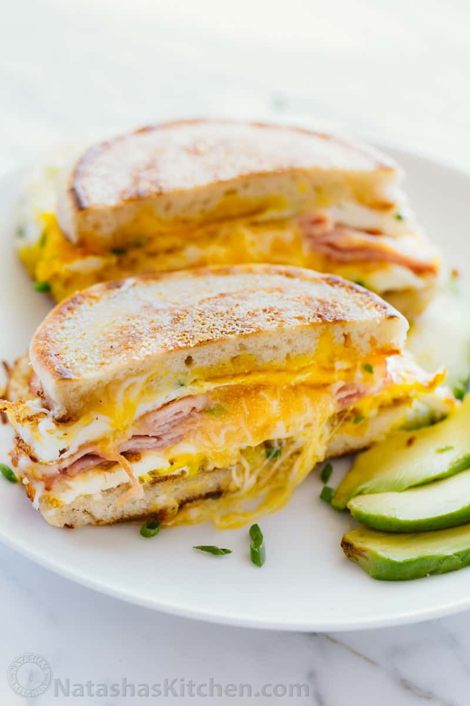

Breakfast Sandwich

Easy and Tasty
This simple yet timeless breakfast sandwich is my favorite saturday
morning go-to breakfast dish. I prefer a simple egg and cheese english muffin
sandwich with horsey sauce and green onions. But there are so many
variations and you really can't go wrong.
Ingredients
1 Serving
- 1 English Muffin
- 1-2 Eggs (or Eqq White equivalent)
- 1-2 Meat slices of your choice (optional)
- 1/3 Cup of shredded cheese
- 1 tsp green onion, finely chopped
- 1 Tbsp Olive Oil (or butter)
- Salt and Pepper (to taste)
- Horseradish Sauce (to taste-optional)
Steps
- Cut the english muffin in half.
- Heat a large non-stick pan over medium heat and drizzle with 1 Tbsp
oil.
- Place the english muffon on one side of the pan cut-side down. Crack
the eggs (side by side, if using 2) on the other half of the pan and
break the yolks with a spatula.
- When the eggs are almost fully cooked, season with salt and pepper as
desired, add green onions and half of the shredded cheese.
- Place the english muffins cut-side-down on top of the eggs and lightly
press down with the spatula.
- Flip the sammy over so that the egg side is up, add the meat, a bit of
horsey sauce, then top with more cheese.
- Fold the sandwhich together and remove from heat.
- Enjoy!